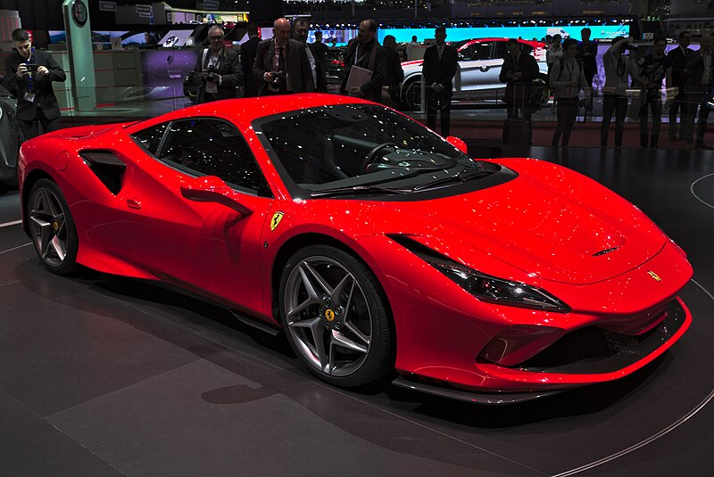
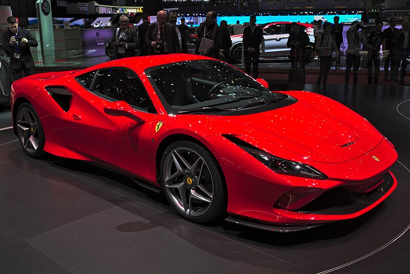

FERRARI
F8 Spider 2019 - 2023
In 2019, Ferrari introduced the open-top version of the F8 Tributo and added the traditional Spider word after the F8
nameplate. The car retained most of the characteristics of its closed-coupe sibling since it was developed in parallel with it.
Ferrari continued the story of the 458 and 488 with the F8 Tributo in 2019, followed by the open-top version of it in the same
year. While some considered that it was more of a heavily facelifted version of the 488, it was more like a new car on older but
upgraded underpinnings. The Italian automaker already had all the ingredients to create the Spider version when it introduced
the Tributo at the Geneva Motor Show but made its customers wait a while since the closed-top model was the one that
sparked the imagination of those who could race such a beautiful vehicle on a track, in friendly races.
The Italian automaker chose to pen the vehicle inside its styling center, which Flavio Manzoni led it. At the front, the LED
headlights had a boomerang shape underlined by daytime running lights. On the lower side of the front fascia, Ferrari installed
a broad splitter flanked by two small air inlets that grabbed the air and cooled the front rotors. An extracting vent placed on
the front lid helped the F8 Spider to stick to the ground and created downforce for the prancing-horse supercar. From its
profile, the open-top vehicle featured a similar windshield and sculptured door panels as its sibling. Ferrari opted for a
retractable hard-top solution, and the roof could’ve been retracted in 14 seconds at a speed of up to 45 kph (28 MPH). Behind
the cabin, Ferrari installed two bulges behind the seats that also covered the safety arches. There was no sloped rear
windscreen. Last but not least, at the back, the F8 Spider featured a wing on the engine cover and quad exhausts underneath
the rear bumper, poking through the massive diffuser.
Inside its cabin, the F8 Spider revealed a cabin for two occupants. The high-bolstered bucket seats were padded with expensive
leather and were separated by the center console. Unlike many other cars on the market, this was not connected to the center
stack to amplify the sensation of lightness. But light didn’t mean low-equipped, so the F8 Spider featured a 7” touchscreen
placed in front of the passenger, who could assist the driver by selecting music. The one behind the wheel had to focus only on
driving, fronting an instrument cluster where a large tachometer took center stage. It was flanked by two LCDs for the
infotainment unit and the navigation system. In addition, these could also show information gathered from the car’s onboard
computer.
The F8 Spider was lighter than the 488 Spider, and the Italian car manufacturer struggled to provide the best available solutions
to lose pounds. In addition, it increased the performance of the 3.9-liter V8 twin-turbocharged powerplant by 50 PS (49 HP)
compared to its predecessor.